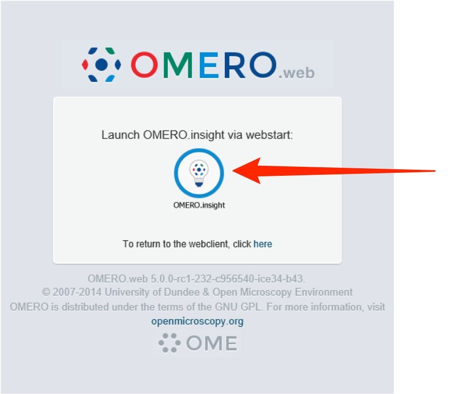

User Help
- User Help Home Page
 Quickstart User Guides
Quickstart User Guides
- Workflow User Guides
 OMERO.insight
OMERO.insight
- OMERO.web
- Other OMERO Applications
- More
Getting Started with OMERO.insight v. 5.0.3
Introduction
OMERO stores image data on a central server. You can use the OMERO.insight client to upload, view and download data from any personal computer.
Your institution’s OMERO server administrator will provide you with the server address to use when connecting from OMERO.insight. They may have set up a user name and password for you too. Alternatively your username and password may be your standard login for the institution’s networked computers.
Installing
-
Download OMERO.insight client at: http://downloads.openmicroscopy.org/latest/omero5

Expand OMERO.insight client archive.

Open OMERO.insight client.


Adding server and logging in
Adding the server is only required the first time an OMERO server is accessed from the computer.
Click on the Spanner icon.

In the Add Server dialog box, click on the + icon.

Enter the server address provided by your OMERO administrator.
Click on Apply.

Enter the Username and Password provided by your OMERO administrator.
Click on Login.

Adding image data
Click on the Importer icon.

Add image data using the File Chooser.

Select image data to be imported.
Click the right Add arrow.

Specify location for saving imported data:
- a new project and/or dataset can be created.
- an existing project and/or dataset can be selected.
- a new dataset can be automatically created from the source folder.
- click Add to the Queue.

Data to be imported appears in queue pane.
When ready click on Import.

Import progress will be shown in the Import # 1 tab.
Further data for import can be queued and imported using the Select Data to Import tab.
Multiple queues can be run simultaneously.

Hovering over a thumbnail of the imported image shows a larger preview.
Double clicking on the thumbnail opens it in the image viewer window.
Select from the View menu to see the image in the full viewer or browse the image in the data tree.

The imported data can be seen in the Data Manager.
Import progress is shown by a green tick on the right-hand side of the data manager window toolbar.
Notifications of any import failure will also appear there with a red X.

Viewing image data
The Data Manager window is divided into 3 panes:
- the left hand pane shows the data tree and tabs for screens, attachments, tags and search.
- the centre pane shows thumbnails and enables filtering of searches.
- the right hand pane shows the metadata for the data and a preview.

Double click the image name or thumbnail to open an image in the full viewer or click on the image viewer icon.

The image viewer enables you to change rendering settings.
Hide / show rendering settings pane.
Toggle between colour and monochrome rendering.
Toggle the Advanced tab on the right of the rendering settings pane to show more controls.

Click the colour picker to open the colour picker window.
This is used to change the colour rendering for a channel.
Clicking the colour well toggles the channel on or off.

Click on Metadata button to view the metadata in the right pane.

Click on Measurement Tool button to open the Measurement Tools palette.

Use the toolbar to draw Regions of Interest (ROIs).
Click on the tabs to see details of ROIs or view results of analysis based on them.

Use the sliders to step through Z-stacks and T-sequences or click the Play triangle to play through them as a sequence.

Using Web Start
If users have restrictions on their ability to install software on their computers, a version of the OMERO.insight client can be downloaded as a Web Start package via the OMERO.web client.
The Web Start download has to be repeated each session, but this has the advantage of ensuring an up-to-date version is always used. For all practical purposes the Web Start OMERO.insight client is identical to the standard OMERO.insight client.
To access the OMERO.web client you will need a web address (URL) provided by your OMERO administrator.
Your username and password to log in is the same used for the OMERO.insight client.
Click on the Web Start button.

Click on the OMERO.insight link in the pop-up window.
On Windows the Java package usually downloads and starts unzipping automatically.
On the Mac you may have to double-click the downloaded file to expand it.

On Windows click Run to open OMERO.insight.
On a Mac click Allow.
Web Start OMERO.insight will have to be downloaded each session, but this ensures you automatically have the latest OMERO.insight version.

All Tutorial Material is available on line at: help.openmicroscopy.org
The Main OME website is at: www.openmicroscopy.org